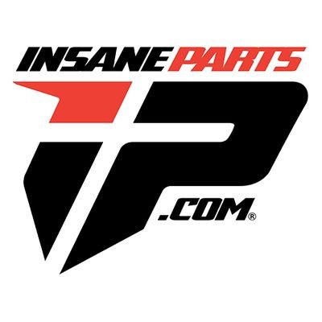
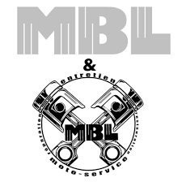
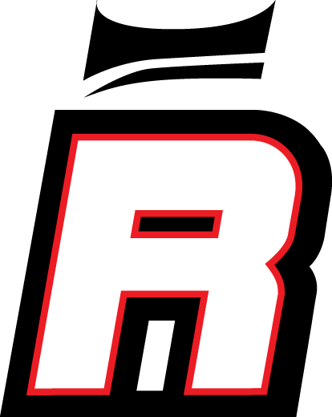

Pour que votre moto soit plus fiable!
les boutiques répertoriés sont choisies par les membres qui ont eu une experience avec ces boutiques.Alors aucune crainte, la fiabilité des pièces proposées est testée et approuvée par nos riders les plus expérimentés comme Kikaninac ,notre supermotard d'exception.

Insane Parts est un site très varié, ils disposent d'une gamme de choix extrêmement large, ne se limitant pas aux supermotards. Leurs produits sont dans le milieu et le bas de gamme mais reste de qualité remarquable. Ils disposent de tout ce dont vous auriez besoin pour votre moto, des carénages, des pièces moteur, des lignes d'échapement, cadres, poignées, selle, suspensions(pas de très bonne qualité néanmoins), roues, jantes et éléctronique. Il est conseillé si votre budjet n'est pas très élevé et si vous aimez pimper votre moto à votre goût.

MBL parts est un site spécialisé dans les jantes surtout, mais on y retrouve également des kits de freinage, des pignons, des couronnes et des chaines pour faire votre set parfait!

Royal Suspension c'est LE site de suspensions par excellence, vous ne trouverez pas plus large choix et plus grande qualité, c'est garanti!